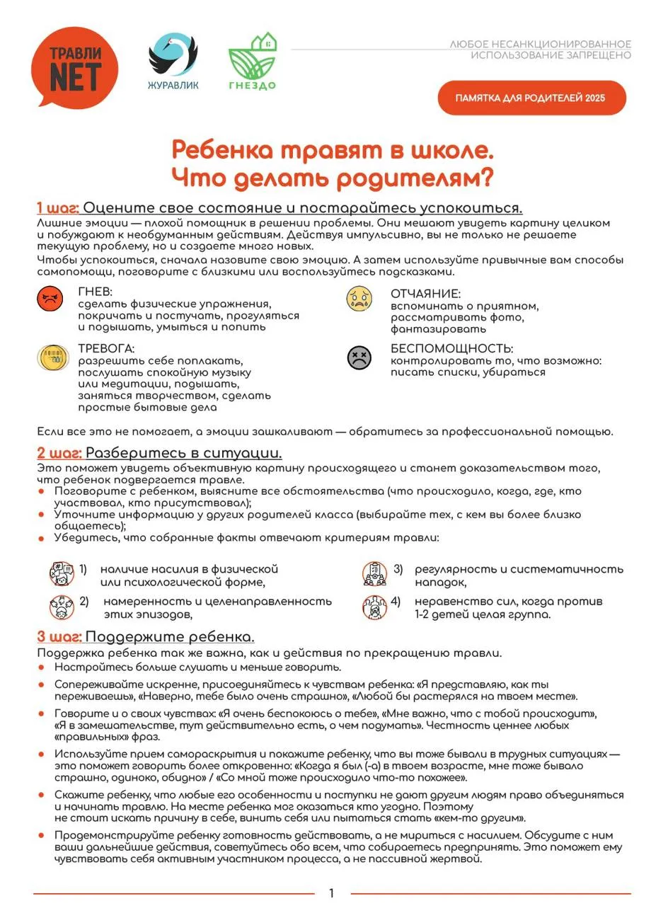

Ваш ребёнок смело исследует мир с собственным «Фонариком». А для вас, его главных проводников и защитников, мы зажгли надёжный Маяк. В этом разделе — проверенные ориентиры, практичные советы и памятки, которые помогут вам быть опорой в любую погоду, сохранять спокойствие и находить радость в совместном путешествии по волнам взросления.